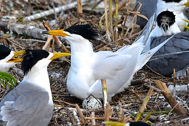

| 馬達加斯加海鵰 |
|

|

生物介紹：
馬達加斯加海雕（學名：Haliaeetus vociferoides），為屬於鷹科的猛禽，以獵食魚類為生。其身形在海雕裡屬中等，長七十餘厘米，翼幅約二百厘米。身體及雙翅均為深棕色，頭部為黃褐色，尾部為白色，嘴部為黑色，尤以尖處為甚，而腳部則為淺灰色。此鳥為馬達加斯加之本土鳥，然而現今之存活量極少，在二十世紀九十年代初，於一百零五個統計地裡，只找到二百二十二隻成年者，其中僅九十九對為正在繁殖的配偶（註：野生鳥類的數量很難統計，因為鳥類會在天空四處遨翔，故吾人常以在繁殖的配偶之數量來表示，此即英文之breeding pairs），故已被列為極危物種。
分布：
主要居住在馬達加斯加西海岸的乾燥落葉森林裡。
原因：
而其瀕危至此，實因為人類之活動所致。森林日漸減少，以致水土流失；濕地日漸消失，變為農地；漁民大量捕魚，奪取其食糧（魚類）；土人更以其身體入藥，並取食其蛋。凡此種種，皆使其幾近滅亡。
保育：
在環保團體之壓力下，當地政府已改善其法律，務求儘可能保護之。另外，其繁衍之方式亦令數量難以增多。其每次會生兩隻蛋，但只會有一隻成年，另一隻則會被存活隻殺死，生物學上稱之為「互噬」。故此有關當局已採取行動，儘量使兩蛋分開孵化，免其自相殘殺。此等保護措施在施行後，終於令其數量回升，達致二百五十對繁殖配偶。